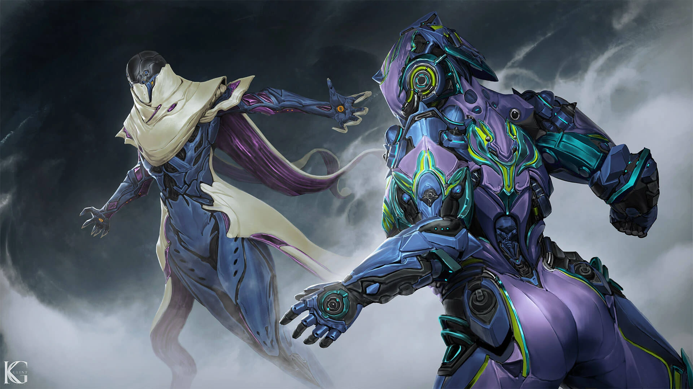

Leveling Up
Warframes require affinity, conventionally known in other games as experience points (XP), in order to attain higher ranks. Each Warframe levels up separately from other Warframes to a maximum of Rank 30. Note that each of the Warframe's equipped weapons have affinity rankings as well which also increase separately from Warframes. During missions, players are awarded affinity through actions getting such as killing enemies, using abilities, completing objectives or reviving downed allies.
With each successive rank, a Warframe gains mod capacity as well as increases to Health, Shields, and Energy capacity, as well as 200 mastery points. Stat boosts received from ranking up are calculated from the base value of the Warframe for each stat, preventing mods from affecting the bonus.
During level up, all Warframe stats gain:
+20% Health capacity every 3 ranks starting at Rank 1
+20% Shield capacity every 3 ranks starting at Rank 2
+5% Energy capacity every 3 ranks starting at Rank 3
For a total of +200% Health and Shields and +50% Energy capacity at Rank 30. In other words, at Rank 30, Warframes will have 3x their base Health and Shields and 1.5x their base Energy capacity.

|